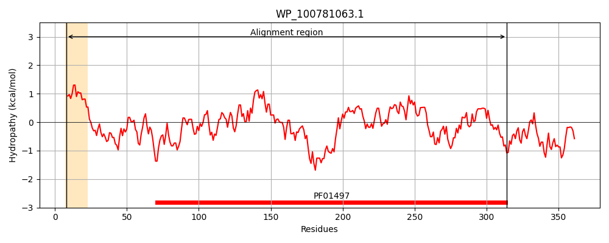
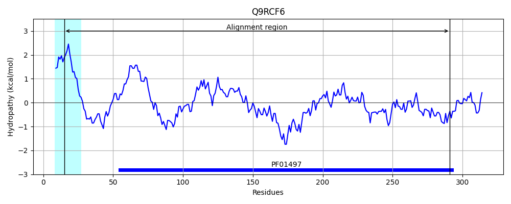
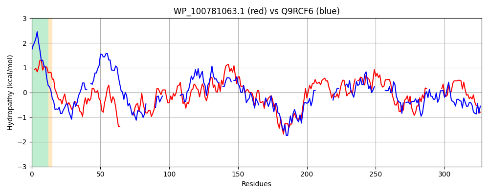

Hit Accession: Q9RCF6
Hit TCID: 3.A.1.14.6
Hit Description: gnl|BL_ORD_ID|18823 gnl|TC-DB|Q9RCF6|3.A.1.14.6 PERIPLASMIC BINDING PROTEIN (FERRIC VIBRIOBACTIN ABC TRANSPORTER, PERIPLASMIC FERRIC VIBRIOBACTIN- BINDING PROTEIN) - Vibrio cholerae.
Mach Len: 327
e:0.000001
Query TMS Count : 1
Hit TMS Count: 1
TMS-Overlap Score: 0.700000
Predicted Substrates:CHEBI:28199;ferrienterobactin(3-)
BLAST Alignment:
Score: 118 , Bit scores: 50 bits, E-value: 6.9e-07, Alignment length: 327, Percentage identity: 24
Query: 8 SLLLTALIATPLFSYATQYPLTVTDLDGRQVTLAKEPQRIILQDGRDIMTLALLDRDNPFKRLVA---------WNNLAKKQDVATWQMLKTTWPQSVTILDMGFSDKGNVDLESVIARQPDLMIAQLRARPALMESGVIDKLSALHVPVLFVDYEIDPAKDTAPSIDLLGKVLNRESQAKAFTDYYRQQLQTIRQKTAAITPKANVFVEALAGNSDACCFTHGHSGWGGLVEAVG-ANNIGSQLLPGASGFVSLEKIISMKPDAWIMTGSKRGNSQVLPLGYEVKPE----------AVKAQAQILLARPGVSQIPAVQAKRAYGV 314
S++L L + + + +P T + DG T+ +P+RI+ +T LL D P A W LA+ + V K WP G+VDLESV QPDL++ + + + I L A+ P + VDY + A LG E QA+ + Q + +R +AN+ HG G+V AV A + +QLL ++ +PD GS + L + YE + QAQ L P + +P++Q K+ YG+
Sbjct: 15 SVILGCLFSGFVSAQQNVWPRTFQNADGSITTIPSQPKRIL--STAVTVTGTLLAIDAPVIASAATTQSTFFEQWRKLAELRQV------KKLWPA------------GSVDLESVYVEQPDLIVVSMIGADSARDQ--IPLLQAI-APTILVDYSDQTWQSLAQQ---LGLATGLEEQAERTIHNFEQWTKQVRDVLDLPKGRANI------------VSYHG----PGVVNAVAKAQSAHAQLLQSVG-------VVLEEPDPAWQAGS-IVHRDFLRIHYEHLTQLQAETTFLITMTDQQAQAFLHDPILKNLPSIQRKQVYGL 291 | Protein Hydropathy Plots: |
|---|
|  |  |
Pairwise Alignment-Hydropathy Plot:
|
|---|
|  |